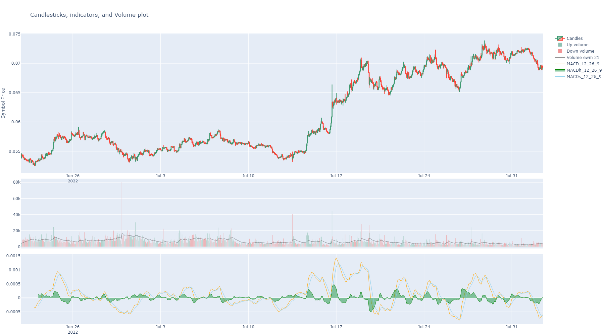
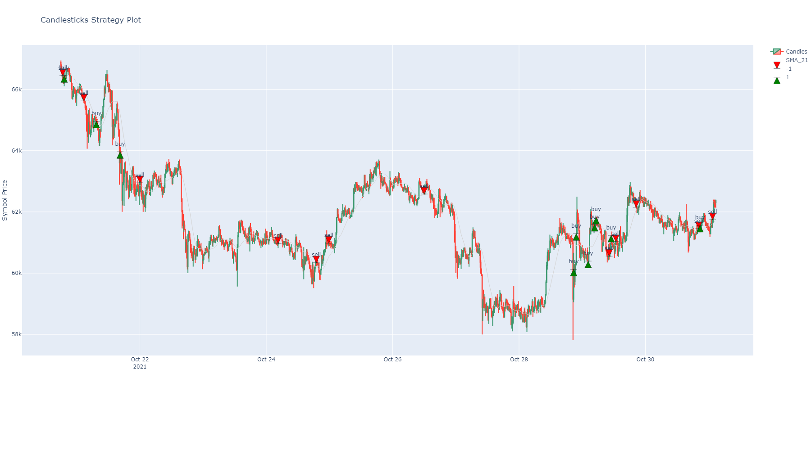
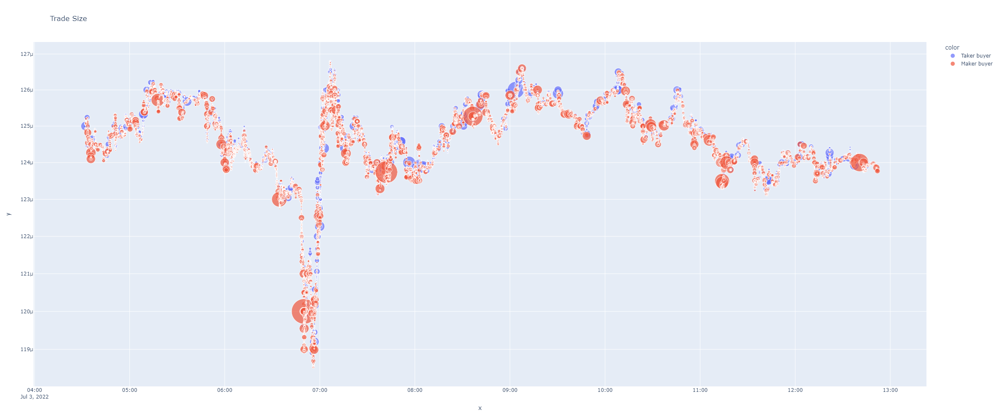
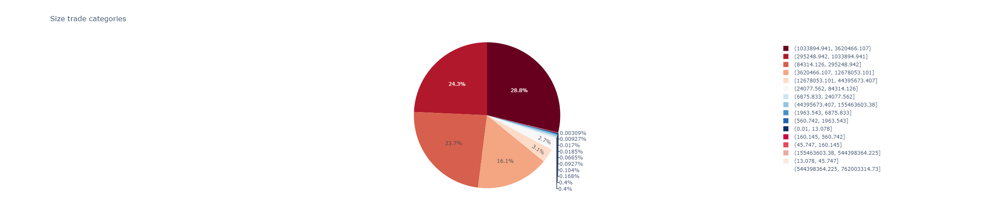
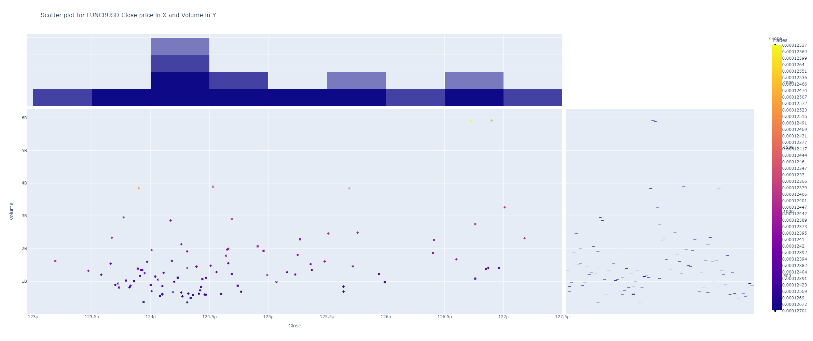
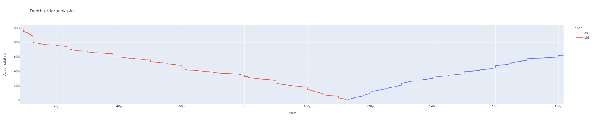
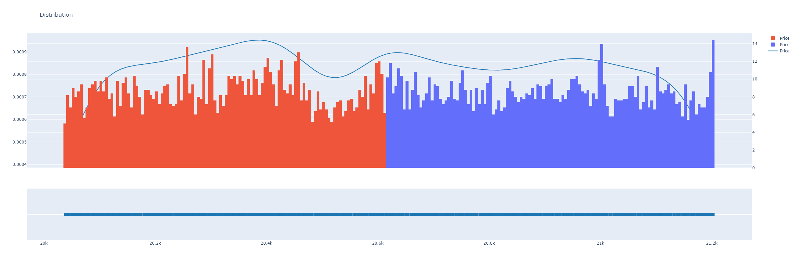
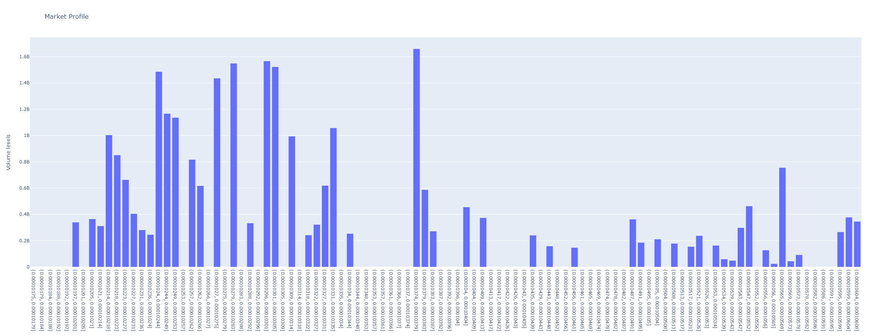

Plotting Module¶
This module can manage plots.
Plots made with Plotly library: https://plotly.com/
Colors¶
Colors can be picked with the name of the color or the index number from this list:
plotly_colors = ["aliceblue", "antiquewhite", "aqua", "aquamarine", "azure", "beige", "bisque", "black",
"blanchedalmond", "blue", "blueviolet", "brown", "burlywood", "cadetblue", "chartreuse", "chocolate",
"coral", "cornflowerblue", "cornsilk", "crimson", "cyan", "darkblue", "darkcyan", "darkgoldenrod",
"darkgray", "darkgrey", "darkgreen", "darkkhaki", "darkmagenta", "darkolivegreen", "darkorange",
"darkorchid", "darkred", "darksalmon", "darkseagreen", "darkslateblue", "darkslategray",
"darkslategrey", "darkturquoise", "darkviolet", "deeppink", "deepskyblue", "dimgray", "dimgrey",
"dodgerblue", "firebrick", "floralwhite", "forestgreen", "fuchsia", "gainsboro", "ghostwhite", "gold",
"goldenrod", "gray", "grey", "green", "greenyellow", "honeydew", "hotpink", "indianred", "indigo",
"ivory", "khaki", "lavender", "lavenderblush", "lawngreen", "lemonchiffon", "lightblue", "lightcoral",
"lightcyan", "lightgoldenrodyellow", "lightgray", "lightgrey", "lightgreen", "lightpink",
"lightsalmon", "lightseagreen", "lightskyblue", "lightslategray", "lightslategrey", "lightsteelblue",
"lightyellow", "lime", "limegreen", "linen", "magenta", "maroon", "mediumaquamarine", "mediumblue",
"mediumorchid", "mediumpurple", "mediumseagreen", "mediumslateblue", "mediumspringgreen",
"mediumturquoise", "mediumvioletred", "midnightblue", "mintcream", "mistyrose", "moccasin",
"navajowhite", "navy", "oldlace", "olive", "olivedrab", "orange", "orangered", "orchid",
"palegoldenrod", "palegreen", "paleturquoise", "palevioletred", "papayawhip", "peachpuff", "peru",
"pink", "plum", "powderblue", "purple", "red", "rosybrown", "royalblue", "rebeccapurple",
"saddlebrown", "salmon", "sandybrown", "seagreen", "seashell", "sienna", "silver", "skyblue",
"slateblue", "slategray", "slategrey", "snow", "springgreen", "steelblue", "tan", "teal", "thistle",
"tomato", "turquoise", "violet", "wheat", "white", "whitesmoke", "yellow", "yellowgreen"]
Module Info¶
This is the plotting module.
Functions:
Choose a random color from plotly colors. |
|
|
Define rows and columns for subplots in plotting engine. |
|
Put candles and axis into a tuple. |
|
Sets or unsets volume histogram. |
|
Plot a scatter plot for an indicator. |
|
Plot a line plot for an indicator. |
|
Fills until expected length iterating with the existing values. |
|
Sets arrows. |
|
Put traces into the figure. |
|
It updates layout of the set plot. |
|
Update legend names. |
|
|
|
Generate vertical shapes for plotting. |
|
Data needs to be a DataFrame that at least contains the columns: Open Close High Low Volume |
|
This is a shortcut from candles_ta. |
|
Plots scatter plot from trades quantity and trades sizes. |
|
Plots a pie chart from a column. |
|
Plot scatter plots with a column of values in X axis and other in Y axis. |
|
Plots two histograms with same x scale to campare distributions of values. |
|
Plots orderbook from a BinPan orderbook dataframe. |
|
Plot a distribution plot for a dataframe column. |
|
Plot a bar plot for a dataframe column with optional segments based on the 'bar_segments' column. |
|
This function generates a horizontal bar chart from a pandas series. |
|
Plots orderbook levels quantities. |
|
Normalize data from minimum as 0 to maximum as 1. |
|
Find precision for getting a target number of bins intervals for values in master column. |
|
Get what vertical slot size results for a number of bins. |
- handlers.plotting.set_color()¶
Choose a random color from plotly colors. :return:
- handlers.plotting.set_subplots(extra_rows: int, candles_ta_height_ratio: float = 0.8, vertical_spacing: float = 0.2)¶
Define rows and columns for subplots in plotting engine.
- Parameters:
extra_rows (int) –
candles_ta_height_ratio (float) –
vertical_spacing (float) –
- Returns:
- handlers.plotting.set_candles(df: DataFrame, x_labels: list = None) tuple¶
Put candles and axis into a tuple. :param pd.DataFrame df: Dataframe OHLC type. :param list x_labels: Labels to replace in x axis plotting. :return:
- handlers.plotting.set_volume_series(df: DataFrame, win: int = 21, green_color='rgba(70, 197, 74, 1)', red_color='rgba(197, 79, 70, 1)') tuple¶
Sets or unsets volume histogram.
- Parameters:
df – A binpan’s dataframe.
win – Window for volume average line.
green_color (str) – An rgba color string like: ‘rgba(144,194,178,255)’
red_color – An rgba color string like: ‘rgba(242,149,149,255)’
- Returns:
A tuple with several figures.
- handlers.plotting.set_ta_scatter(df: DataFrame, serie: Series, annotations: list = None, color='blue', name='Indicator', text_position='bottom center')¶
Plot a scatter plot for an indicator.
- Parameters:
df (pd.DataFrame) – A binpan’s dataframe just for the index.
serie (pd.Series) – data to plot.
annotations (list) – Text for annotations over the plotted data.
color (str) – A plotly color.
name (str) – Name for the plot.
text_position (str) – A position from plotly documented annotation positions.
- Returns:
- handlers.plotting.set_ta_line(df_index: <pandas._libs.properties.AxisProperty object at 0x000002B236A1E7A0>, serie: ~pandas.core.series.Series, color='blue', name='Indicator', line_width: float = 0.5, fill_color: str = None, fill_mode: str = 'none', yaxis: str = 'y', show_legend=True)¶
Plot a line plot for an indicator.
- Parameters:
df_index (pd.DataFrame.index) – A binpan’s dataframe just for the index.
serie (pd.Series) – data to plot.
color (str) – A plotly color.
name (str) – Name for the plot.
line_width (float) – Line width size.
fill_color (str or None) – Color to fill areas in the plot.
fill_mode (str) – Mode to fill for, like to x axis or to next plot, etc.
yaxis (str) – Axis name for plotting.
show_legend (bool) – Shows it or not.
- Returns:
- handlers.plotting.fill_missing(data_list: list, expected_length: int)¶
Fills until expected length iterating with the existing values.
- Parameters:
data_list (list) –
expected_length (int) –
- Returns:
Filled list.
- handlers.plotting.set_arrows(annotations: Series, name: str = None, tag: str = None, textposition='top center', mode='markers+text', marker_symbol='arrow-bar-down', marker_color='orange', marker_line_color='black', marker_line_width=0.5, marker_size=12)¶
Sets arrows.
Style info at https://plotly.com/python/marker-style/
- handlers.plotting.add_traces(fig, list_of_plots: list, rows: list, cols: list)¶
Put traces into the figure.
- Parameters:
fig – Figure to set.
list_of_plots – Plot objects to insert into the figure.
rows (list) – A list with row positions each plot.
cols (list) – A list with column positions each plot.
- Returns:
Set figure.
- handlers.plotting.set_layout_format(fig, axis_q: int, title: str, yaxis_title: str, width: int, height: int, range_slider: bool)¶
It updates layout of the set plot.
- Parameters:
fig – Figure object.
axis_q (int) – Y axis count.
title (str) – A title for the layout.
yaxis_title (str) – Y axis title.
width (int) – Layout size.
height (int) – Layout height.
range_slider (bool) – enabled or not.
- Returns:
- handlers.plotting.update_names(fig, names: dict)¶
Update legend names.
- Parameters:
fig – Figure object.
names – dict of names.
- Returns:
Updated figure.
- handlers.plotting.deploy_traces(annotations: list, colors: list, markers: list, text_positions: list, mark_names: list, tags: list) list¶
- Parameters:
annotations –
colors –
markers –
text_positions –
mark_names –
tags –
- Returns:
- handlers.plotting.generate_vertical_shapes(timestamps: list, y0: float, y1: float, color='blue', width=1, yref='y')¶
Generate vertical shapes for plotting. Vertical lines for candles plot. :param timestamps: A list of timestamps to plot vertical lines. :param y0: A y0 value. :param y1: A y1 value. :param color: A color string. :param width: A width value. :param yref: A yref value to define subplot by identification of its y axis. :return:
- handlers.plotting.candles_ta(data: DataFrame, indicators_series: list = None, rows_pos=None, indicator_names=None, indicators_colors=None, indicators_color_filled: dict = None, indicators_filled_mode: dict = None, axis_groups=None, plot_splitted_serie_couple=None, width: int = 1800, height: int = 1000, range_slider: bool = False, red_timestamps=None, blue_timestamps=None, candles_ta_height_ratio: float = 0.5, plot_volume: bool = True, title: str = 'Candlesticks, indicators, and Volume plot', yaxis_title: str = 'Symbol Price', annotation_values: list = None, markers: list = None, text_positions: list = None, annotation_colors: list = None, annotation_legend_names: list = None, labels: list = None, plot_bgcolor: str = None, text_index: bool = False, vol_up_color: str = None, vol_down_color: str = None)¶
Data needs to be a DataFrame that at least contains the columns: Open Close High Low Volume
It plots candles and optionally volume, but can plot any list of pandas series with indicators (float values) with same index.
Indicators will be plotted below the candles in subplots according to a row position number, counting 1 as overlay in the candles subplot and the rest in row subplots. Several indicators can be plotted in the same row to overlay between them and compare.
Note
Beware of zeros or values in a different scale when plotting overlapped over candles, that can break the scale of the graph.
- Parameters:
data (pd.DataFrame) – a DataFrame that at least contains the columns: Open Close High Low Volume
indicators_series (list or pd.DataFrame) – a list of pandas series with float values as indicators.
rows_pos (list) – 1 means over the candles. Other numbers mean subsequent subplots under the candles.
indicator_names (list) – Names to show in the plot. Defaults to series name.
indicators_colors (list) –
Color can be forced to anyone from the plotly colors list.
indicators_color_filled (list or dict) – Color can be forced to fill to zero line. Is a list of Nones for each indicator in indicator list or a fillcolor. For transparent colors use rgba string code to define color. Example for transparent green ‘rgba(26,150,65,0.5)’ or transparent red ‘rgba(204,0,0,0.5)’. It can be a dictionary with each indicator column name and fill color.
indicators_filled_mode (dict) – A dict with filled areas for plotting.
axis_groups (dict) – A dict with named groups for indicators, useful for plotting filled areas using tonexty fill mode.
plot_splitted_serie_couple (dict) – A dict with splitted data for multiple colours when filling areas using tonexty.
width (int) – Plot sizing
height (int) – Plot sizing
range_slider (bool) – For the volume plot.
red_timestamps (list) – A list of timestamps to plot vertical lines overlap in red color.
blue_timestamps (list) – A list of timestamps to plot vertical lines overlap in blue color.
candles_ta_height_ratio (float) – A ratio between the big candles plot and (if any) the rest of indicator subplots below.
plot_volume (bool or str) – Optional to plot volume from “Volume” column or pass volume column name.
title (str) – A title string.
yaxis_title (str) – A name string.
annotation_values (list) – A list of pandas series with values to plot marks or annotations overlapped in the candles plot.
markers (list) –
Ordered like the annotations list. Example
markers = ["arrow-bar-down", "arrow-bar-up", "arrow-bar-left", "arrow-bar-right"]text_positions (list) –
Ordered like the annotations list. Example
text_positions = ["top center", "middle left", "top center", "bottom center", "top right", "middle left", "bottom right", "bottom left", "top right", "top right"]
annotation_colors (list) –
Ordered like the annotations list. Example from default colors
annotation_colors = ['cornflowerblue', 'blue', 'lightseagreen', 'green', 'cornflowerblue', 'rosybrown', 'lightseagreen', 'black', 'orange', 'pink', 'red', 'rosybrown', 'cornflowerblue', 'blue', 'lightseagreen', 'green', 'cornflowerblue', 'rosybrown', 'lightseagreen', 'black', 'orange', 'pink', 'red', 'rosybrown']
annotation_legend_names (list) – Ordered like the annotations list of names to show in legend.
labels (list) –
Ordered like the annotations list of tags to plot overlapped. It defaults to price value if omitted. Example: .. code-block:: python
labels = [‘buy’, ‘sell’]
Plot example:
import binpan ethbtc = binpan.Symbol(symbol='ethbtc', tick_interval='1h') ethbtc.macd(fast=12, slow=26, smooth=9) print(ethbtc.df) binpan.handlers.plotting.candles_ta(data=ethbtc.df, indicators_series=[ethbtc.df['MACD_12_26_9'], ethbtc.df['MACDh_12_26_9'], ethbtc.df['MACDs_12_26_9']], indicators_color_filled=[False, 'rgba(26,150,65,0.5)', False], rows_pos=[2, 2, 2], indicators_colors=['orange', 'green', 'skyblue'])
- Parameters:
plot_bgcolor – Set background color.
vol_up_color (str) – Color for down volume bars. An rgba color string like: rgba(144,194,178,255) or ‘rgba(38, 171, 40, 100)’ for more opacity.
vol_down_color (str) – Color for down volume bars. An rgba color string like: ‘rgba(242,149,149,255)’ or ‘rgba(233, 56, 18, 100)’ for more opacity.
text_index (bool) – If enables, index will be transformed to a text index. It can be useful to plot candles not time correlated like reversal candles.
{kind=link}
- handlers.plotting.candles_tagged(data: DataFrame, width=1800, height=1000, candles_ta_height_ratio=0.5, plot_volume=True, title: str = 'Candlesticks Strategy Plot', yaxis_title: str = 'Symbol Price', on_candles_indicator=None, red_timestamps=None, blue_timestamps=None, indicator_series=None, indicator_names=None, indicator_colors=None, fill_control: dict = None, indicators_filled_mode: dict = None, axis_groups=None, plot_splitted_serie_couple=None, rows_pos=None, plot_bgcolor=None, actions_col: str = None, priced_actions_col: str = 'Close', markers_labels: dict = None, markers: dict = None, marker_colors: dict = None, marker_legend_names: dict = None)¶
This is a shortcut from candles_ta. It defaults many inputs to better Jupyter Notebook usage.
Data needs to be a DataFrame that at least contains the columns: Open Close High Low Volume
It plots candles and optionally volume, but can plot any list of pandas series with indicators (float values) with same index.
Indicators will be plotted below the candles in subplots according to a row position number, counting 1 as overlay in the candles subplot and the rest in row subplots. Several indicators can be plotted in the same row to overlay between them and compare.
Note
Beware of zeros or values in a different scale when plotting overlapped over candles, that can break the scale of the graph.
Plot example:
- Parameters:
data (pd.DataFrame) – a DataFrame that at least contains the columns: Open Close High Low Volume
width (int) – Plot sizing
height (int) – Plot sizing
candles_ta_height_ratio (float) – A ratio between the big candles plot and (if any) the rest of indicator subplots below.
plot_volume (bool) – Optional to plot volume.
title (str) – A title string.
yaxis_title (str) – A name string.
on_candles_indicator – A list of pandas series with values to plot overlapping candles, not in a subplot. Example: SMA.
red_timestamps (list) – A list of timestamps to plot vertical lines overlap in red color.
blue_timestamps (list) – A list of timestamps to plot vertical lines overlap in blue color.
indicator_series (list) – a list of pandas series with float values as indicators. Usually not overlap with candles indicators. But to plot in a subplot.
indicator_names (list) – Names to show in the plot. Defaults to series name.
indicator_colors (list) –
Color can be forced to anyone from the plotly colors list:
fill_control (dict or list) – A dictionary with color to fill or False bool for each indicator. Is the color to the zero line for the indicator plot. If a list passed, it iterates to assign each item in the list with the same index item in the indicators list.
indicators_filled_mode (dict) – A dict with filled areas for plotting.
axis_groups (dict) – A dict with named groups for indicators, useful for plotting filled areas using tonexty fill mode.
plot_splitted_serie_couple (dict) – A dict with splitted data for multiple colours when filling areas using tonexty.
rows_pos (list) – 1 means over the candles. Other numbers mean subsequent subplots under the candles.
plot_bgcolor – Set background color.
actions_col – A column name of the column with string tags like buy, sell, etc. This is for plotting annotation marks overlapped over candles. It is mandatory for managing markers, annotations and legend names of annotations.
priced_actions_col –
The name of the column containing value of action to position over candles. Used just if actions column passed.
Example:
import binpan from handlers.strategies import random_strategy bt = binpan.Symbol(symbol='btcusdt', tick_interval='15m', time_zone='Europe/Madrid', end_time='2021-10-31 03:00:00') bt.sma(21) df = handlers.strategies.random_strategy(data=bt.df, buys_qty=10, sells_qty=12) print(df['actions'].value_counts()) -1.0 12 1.0 10 Name: actions, dtype: int64 binpan.handlers.plotting.candles_tagged(data=df, plot_volume=False, on_candles_indicator=[df.SMA_21], candles_ta_height_ratio=0.8, actions_col='actions', markers_labels={-1: 'sell', 1: 'buy'}, marker_colors={-1: 'red', 1: 'green'})
markers_labels (dict) –
Annotations of tags to show overlapped. Keys are the shown tags in the plot and values are the dataframe values to consider what marker and color used. Position of label defaults to close price. This feature is enabled just if actions column passed.
Example:
markers_labels = {1: 'buy', -1: 'sell'}markers (dict) –
Plotly marker type for each label. Usually, if referenced by number will be a not filled mark and using string name will be a color filled one. Used just if actions column passed. Check plotly info: https://plotly.com/python/marker-style/
markers = {'1': "arrow-bar-up", '-1': "arrow-bar-down"} # for marker integer codes see: plotly_markers = [0, '0', 'circle', 100, '100', 'circle-open', 200, '200', 'circle-dot', 300, '300', 'circle-open-dot', 1, '1', 'square', 101, '101', 'square-open', 201, '201', 'square-dot', 301, '301', 'square-open-dot', 2, '2', 'diamond', 102, '102', 'diamond-open', 202, '202', 'diamond-dot', 302, '302', 'diamond-open-dot', 3, '3', 'cross', 103, '103', 'cross-open', 203, '203', 'cross-dot', 303, '303', 'cross-open-dot', 4, '4', 'x', 104, '104', 'x-open', 204, '204', 'x-dot', 304, '304', 'x-open-dot', 5, '5', 'triangle-up', 105, '105', 'triangle-up-open', 205, '205', 'triangle-up-dot', 305, '305', 'triangle-up-open-dot', 6, '6', 'triangle-down', 106, '106', 'triangle-down-open', 206, '206', 'triangle-down-dot', 306, '306', 'triangle-down-open-dot', 7, '7', 'triangle-left', 107, '107', 'triangle-left-open', 207, '207', 'triangle-left-dot', 307, '307', 'triangle-left-open-dot', 8, '8', 'triangle-right', 108, '108', 'triangle-right-open', 208, '208', 'triangle-right-dot', 308, '308', 'triangle-right-open-dot', 9, '9', 'triangle-ne', 109, '109', 'triangle-ne-open', 209, '209', 'triangle-ne-dot', 309, '309', 'triangle-ne-open-dot', 10, '10', 'triangle-se', 110, '110', 'triangle-se-open', 210, '210', 'triangle-se-dot', 310, '310', 'triangle-se-open-dot', 11, '11', 'triangle-sw', 111, '111', 'triangle-sw-open', 211, '211', 'triangle-sw-dot', 311, '311', 'triangle-sw-open-dot', 12, '12', 'triangle-nw', 112, '112', 'triangle-nw-open', 212, '212', 'triangle-nw-dot', 312, '312', 'triangle-nw-open-dot', 13, '13', 'pentagon', 113, '113', 'pentagon-open', 213, '213', 'pentagon-dot', 313, '313', 'pentagon-open-dot', 14, '14', 'hexagon', 114, '114', 'hexagon-open', 214, '214', 'hexagon-dot', 314, '314', 'hexagon-open-dot', 15, '15', 'hexagon2', 115, '115', 'hexagon2-open', 215, '215', 'hexagon2-dot', 315, '315', 'hexagon2-open-dot', 16, '16', 'octagon', 116, '116', 'octagon-open', 216, '216', 'octagon-dot', 316, '316', 'octagon-open-dot', 17, '17', 'star', 117, '117', 'star-open', 217, '217', 'star-dot', 317, '317', 'star-open-dot', 18, '18', 'hexagram', 118, '118', 'hexagram-open', 218, '218', 'hexagram-dot', 318, '318', 'hexagram-open-dot', 19, '19', 'star-triangle-up', 119, '119', 'star-triangle-up-open', 219, '219', 'star-triangle-up-dot', 319, '319', 'star-triangle-up-open-dot', 20, '20', 'star-triangle-down', 120, '120', 'star-triangle-down-open', 220, '220', 'star-triangle-down-dot', 320, '320', 'star-triangle-down-open-dot', 21, '21', 'star-square', 121, '121', 'star-square-open', 221, '221', 'star-square-dot', 321, '321', 'star-square-open-dot', 22, '22', 'star-diamond', 122, '122', 'star-diamond-open', 222, '222', 'star-diamond-dot', 322, '322', 'star-diamond-open-dot', 23, '23', 'diamond-tall', 123, '123', 'diamond-tall-open', 223, '223', 'diamond-tall-dot', 323, '323', 'diamond-tall-open-dot', 24, '24', 'diamond-wide', 124, '124', 'diamond-wide-open', 224, '224', 'diamond-wide-dot', 324, '324', 'diamond-wide-open-dot', 25, '25', 'hourglass', 125, '125', 'hourglass-open', 26, '26', 'bowtie', 126, '126', 'bowtie-open', 27, '27', 'circle-cross', 127, '127', 'circle-cross-open', 28, '28', 'circle-x', 128, '128', 'circle-x-open', 29, '29', 'square-cross', 129, '129', 'square-cross-open', 30, '30', 'square-x', 130, '130', 'square-x-open', 31, '31', 'diamond-cross', 131, '131', 'diamond-cross-open', 32, '32', 'diamond-x', 132, '132', 'diamond-x-open', 33, '33', 'cross-thin', 133, '133', 'cross-thin-open', 34, '34', 'x-thin', 134, '134', 'x-thin-open', 35, '35', 'asterisk', 135, '135', 'asterisk-open', 36, '36', 'hash', 136, '136', 'hash-open', 236, '236', 'hash-dot', 336, '336', 'hash-open-dot', 37, '37', 'y-up', 137, '137', 'y-up-open', 38, '38', 'y-down', 138, '138', 'y-down-open', 39, '39', 'y-left', 139, '139', 'y-left-open', 40, '40', 'y-right', 140, '140', 'y-right-open', 41, '41', 'line-ew', 141, '141', 'line-ew-open', 42, '42', 'line-ns', 142, '142', 'line-ns-open', 43, '43', 'line-ne', 143, '143', 'line-ne-open', 44, '44', 'line-nw', 144, '144', 'line-nw-open', 45, '45', 'arrow-up', 145, '145', 'arrow-up-open', 46, '46', 'arrow-down', 146, '146', 'arrow-down-open', 47, '47', 'arrow-left', 147, '147', 'arrow-left-open', 48, '48', 'arrow-right', 148, '148', 'arrow-right-open', 49, '49', 'arrow-bar-up', 149, '149', 'arrow-bar-up-open', 50, '50', 'arrow-bar-down', 150, '150', 'arrow-bar-down-open', 51, '51', 'arrow-bar-left', 151, '151', 'arrow-bar-left-open', 52, '52', 'arrow-bar-right', 152, '152', 'arrow-bar-right-open']
marker_colors (dict) – Colors of the annotations. Used just if actions column passed.
marker_legend_names (dict) – A dict with the names to print as tags over the annotations. Used just if actions column passed.
{kind=link}
{kind=link}
- handlers.plotting.plot_trades(data: DataFrame, max_size: int = 60, height: int = 1000, logarithmic: bool = False, overlap_prices: DataFrame = None, title: str = None, shifted: int = 1, **kwargs_update_layout)¶
Plots scatter plot from trades quantity and trades sizes. Marks are size scaled to the max size. Marks are semi transparent and colored using Maker buyer or Taker buyer discrete colors. Usually red and blue.
Can let you see where are the big sized trades done and the taker or maker buyer side.
- Parameters:
data (pd.DataFrame) – A BinPans trades dataframe.
max_size (int) – Size of the marks for the biggest quantity sized trades.
height (int) – Plot sizing.
logarithmic (bool) – Y axis in a logarithmic scale.
overlap_prices (pd.DataFrame) – Data to plot overlapping scatter plot.
title (str) – Title string.
shifted (int) – If passed any integer, shifts candles to the right one step, this way can see more naturally trades actions over klines.
kwargs_update_layout – Update layout plotly options.
- Example:
- 
import binpan lunc = binpan.Symbol(symbol='luncbusd', tick_interval='5m', limit = 100, time_zone = 'Europe/Madrid', time_index = True, closed = True) lunc.get_agg_trades() binpan.handlers.plotting.plot_trade_size(data = lunc.trades, logarithmic=True)
{kind=link}
- handlers.plotting.plot_pie(serie: Series, categories: int = 15, title='Size trade categories', logarithmic=False)¶
Plots a pie chart from a column. Useful to see size ranges in trades, but can be used in any way.
- Parameters:
serie (pd.Series) – pandas serie with numeric values or strings.
categories (int) – Category count to divide chart.
title (str) – String title.
logarithmic (bool) – If logarithmic is selected as true, the sizes of each interval will be distributed in logarithmic steps from the smallest to the largest, that is, the smallest values will be divided into smaller groups that will increase exponentially in size.
Example:
import binpan lunc = binpan.Symbol(symbol='luncbusd', tick_interval='5m', limit = 100, time_zone = 'Europe/Madrid', time_index = True, closed = True) lunc.get_agg_trades() binpan.handlers.plotting.plot_pie(serie = lunc.trades['Quantity'], logarithmic=True)
{kind=link}
- handlers.plotting.plot_scatter(df: DataFrame, x_col: str, y_col: str, symbol: str = None, color: str = None, marginal: bool = True, title: str = None, height: int = 1000, **kwargs)¶
Plot scatter plots with a column of values in X axis and other in Y axis.
- Parameters:
df (pd.DataFrame) – A Dataframe.
x_col (str) – Name of column with X axis data.
y_col (str) – Name of column with Y axis data.
symbol (str) – Name of column with values (discrete or not) to apply a symbol each.
color (str) – Name of column with values (discrete or not) to apply a color each.
marginal (bool) – Lateral auxiliar plots.
title (str) – A title string.
height – Plot sizing.
kwargs – Optional plotly kwargs.
Example:
import binpan lunc = binpan.Symbol(symbol='luncbusd', tick_interval='5m', limit = 100, time_zone = 'Europe/Madrid', time_index = True, closed = True) binpan.handlers.plotting.plot_scatter(df = lunc.df, x_col='Close', y_col='Volume', color='Trades', symbol='Close', title='Scatter plot for LUNCBUSD Close price in X and Volume in Y' )
{kind=link}
- handlers.plotting.plot_hists_vs(x0: Series, x1: Series, x0_name: str = None, x1_name: str = None, bins: int = 50, hist_funct: str = 'sum', height: int = 900, title: str = None, **kwargs_update_layout)¶
Plots two histograms with same x scale to campare distributions of values.
- Parameters:
x0 (pd.Series) – A pandas series.
x1 (pd.Series) – A pandas series.
x0_name (str) – Name for the legend
x1_name (str) – Name for the legend
bins (int) – Number of bins or bars to show.
hist_funct (str) –
A function to apply to data. It can be ‘sum’, ‘count’, ‘average’, etc…
More details in: https://plotly.com/python/histograms/#histograms-with-gohistogram
height (int) – Plot sizing.
title (str) – Plot title.
kwargs_update_layout – Plotly update layout options.
Example:
import binpan lunc = binpan.Symbol(symbol='luncbusd', tick_interval='5m', limit = 100, time_zone = 'Europe/Madrid', time_index = True, closed = True) binpan.handlers.plotting.plot_hists_vs(x0=lunc.df['High'], x1=lunc.df['Low'], bins=50, hist_funct='count', title='High and Low prices distribution.')

- handlers.plotting.orderbook_depth(df: DataFrame, accumulated=True, title='Depth orderbook plot', height=500, plot_y='Quantity', **kwargs)¶
Plots orderbook from a BinPan orderbook dataframe.
- Parameters:
df (pd.DAtaFrame) – BinPan orderbook dataframe.
accumulated (bool) – If true, applies cumsum to asks and bids.
title (str) – A title string.
height (int) – Plot sizing.
plot_y (str) – Column name with y axis data. Defaults to Quantity.
kwargs – Plotly kwargs.
Example:
import binpan lunc = binpan.Symbol(symbol='luncbusd', tick_interval='5m', limit = 100, time_zone = 'Europe/Madrid', time_index = True, closed = True) lunc.get_orderbook()
{kind=link}
- handlers.plotting.dist_plot(df: DataFrame, x_col: str = 'Price', color: str = 'Side', bins: int = 300, histnorm: str = 'density', height: int = 800, title: str = 'Distribution', **update_layout_kwargs)¶
Plot a distribution plot for a dataframe column. Plots line for kernel distribution.
- Parameters:
df (pd.DataFrame) – A BinPan Dataframe like orderbook, candles, or any other.
x_col (str) – Column name for x-axis data.
color (str) – Column name with tags or any values for using as color scale.
bins (int) – Columns in histogram.
histnorm (str) – One of ‘percent’, ‘probability’, ‘density’, or ‘probability density’ from plotly express documentation. https://plotly.github.io/plotly.py-docs/generated/plotly.express.histogram.html
height (int) – Plot sizing.
title (str) – A title string
update_layout_kwargs – Additional kwargs for plotly update_layout method.
update_layout_kwargs – Additional kwargs for plotly update_layout method.
Example from binpan Symbol plot_orderbook_density method.

{kind=link}
- handlers.plotting.bar_plot(df: DataFrame, x_col_to_bars: str, y_col: str, bar_segments: str = 'Buyer was maker', split_colors: bool = False, bins: int = 100, aggregation: Literal['sum', 'mean'] = 'sum', height: int = 800, title: str = 'Bar Plot', y_axis_title: str = None, horizontal_bars: bool = False, **update_layout_kwargs)¶
Plot a bar plot for a dataframe column with optional segments based on the ‘bar_segments’ column.
- Parameters:
df (pd.DataFrame) – A DataFrame like orderbook, candles, trades or any other.
x_col_to_bars (str) – A column name to group values into x bars, like in example, price.
y_col (str) – Column names for y-axis data, if more than one will be stacked.
bar_segments (str) – Other column name to differentiate each bar segment (if split_colors is True).
split_colors (bool) – Whether to split the bars into segments based on the bar_segments column.
bins (int) – Columns in histogram.
aggregation (str) – Aggregation method, can be ‘sum’ or ‘mean’.
height (int) – Plot sizing.
title (str) – A title string
y_axis_title (str) – Title for y axis plot.
horizontal_bars – Flips graph with horizontal bars.
update_layout_kwargs – Additional kwargs for plotly update_layout method.
{kind=link}
- handlers.plotting.profile_plot(serie: Series, title: str = 'Profile Plot', x_axis_title: str = None, y_axis_title: str = None, vertical_bar: float = None, color: str = 'blue', height: int = 800, width: int = 400, **update_layout_kwargs) str¶
This function generates a horizontal bar chart from a pandas series.
- Parameters:
serie (pd.Series) – The pandas series to be plotted.
title (str) – The title of the plot. Default is “Profile Plot”.
x_axis_title (str) – The title for the x-axis. Default is None.
y_axis_title (str) – The title for the y-axis. Default is None.
vertical_bar (float) – A vertical line to be drawn in the plot. Default is None.
color (str) – The color of the bars in the plot. Default is ‘blue’.
height (int) – The height of the plot. Default is 800.
width (int) – The width of the plot. Default is None, which lets Plotly auto-size the plot.
update_layout_kwargs – Additional arguments for customizing the appearance of the plot.
- Return str:
The path to the image file of the generated plot.
- handlers.plotting.plot_orderbook_value(ask_data: List[Tuple[List, float]], bid_data: List[Tuple[List, float]], close_prices: Series)¶
Plots orderbook levels quantities.
- Parameters:
ask_data (list) – Quantities in a list of tuples with level quantities and a timestamp.
bid_data (list) – Quantities in a list of tuples with level quantities and a timestamp.
close_prices – Close prices with time index.
{kind=link}
- handlers.plotting.normalize(max_value: int, min_value: int, data: list)¶
Normalize data from minimum as 0 to maximum as 1.
- Parameters:
max_value (int or float) – A numeric value.
min_value (int or float) – A numeric value.
data – List of numerica data.
- Returns:
Normalized numeric data.
- handlers.plotting.find_step_for_bins(data: DataFrame, master_column: str, bins: int = 100, pip_size=1e-06)¶
Find precision for getting a target number of bins intervals for values in master column.
Very expensive function.
- Parameters:
data (pd.DataFrame) – A binpan’s dataframe.
master_column (str) – Column to groupby.
bins (int) – Expected vertical slots.
pip_size – Size of what will be considered a tiny value.
- Return float:
The step for the bins.
- handlers.plotting.group_slot(data: DataFrame, master_column: str, bins: int = 100)¶
Get what vertical slot size results for a number of bins.
- Parameters:
data (pd.DataFrame) – A binpan’s dataframe.
master_column (str) – Column to groupby.
bins (int) – Expected vertical slots.
- Returns:
Size of each slot.